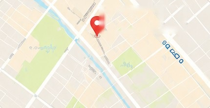
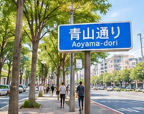
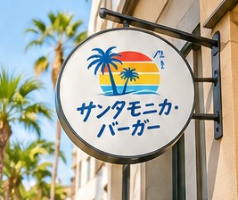

アクセス
お店で、お待ちしています。
店舗情報
| 営業時間 | 11:00 – 21:00 (L.O. 20:30) |
|---|---|
| 住所 | 東京都港区南青山1-2-3 |
| 最寄り駅 | 表参道駅 徒歩5分 |

サンタモニカ・バーガー駅からの道順
表参道駅の
A4出口を出ます青山通りを渋谷方面へ
3分歩きます
青い看板が目印です

お店で、お待ちしています。
| 営業時間 | 11:00 – 21:00 (L.O. 20:30) |
|---|---|
| 住所 | 東京都港区南青山1-2-3 |
| 最寄り駅 | 表参道駅 徒歩5分 |

サンタモニカ・バーガー表参道駅の
A4出口を出ます
青山通りを渋谷方面へ
3分歩きます

青い看板が目印です
